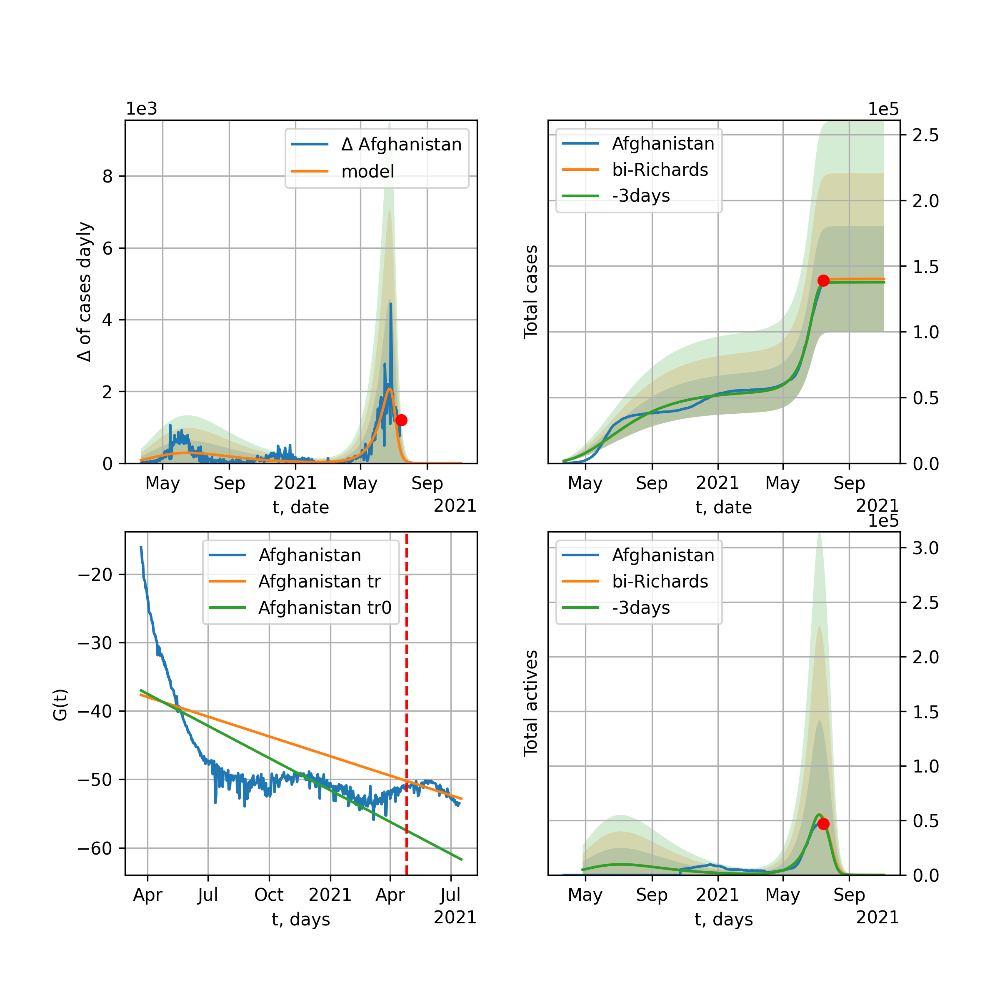
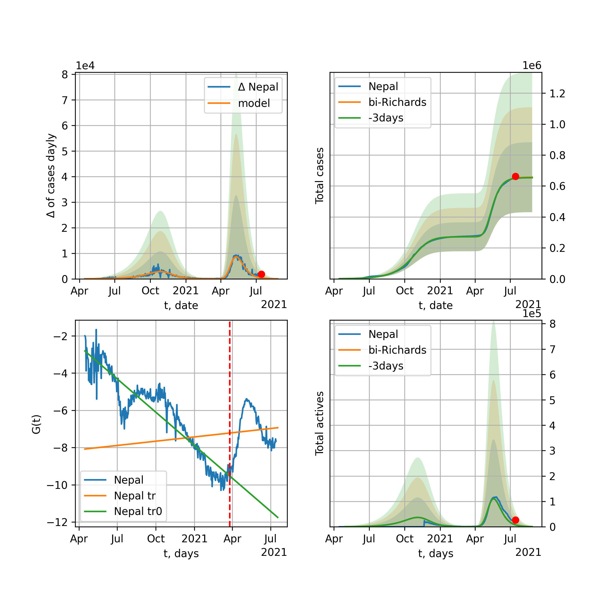
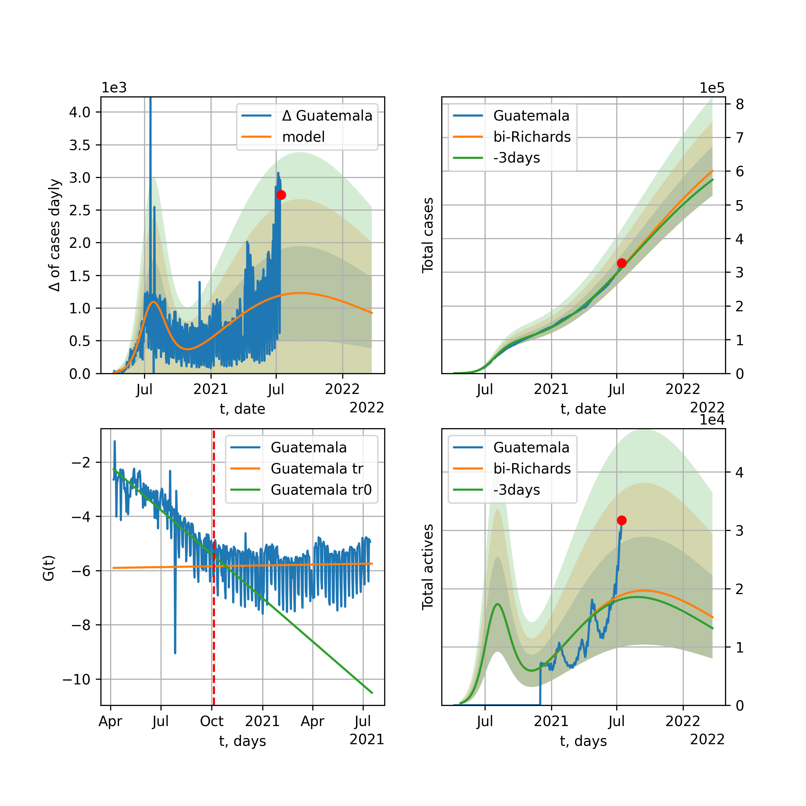

Multi-logistic model of COVID-19 dynamics
Model, code, results
Project maintained by algmaknick Hosted on GitHub Pages — Theme by mattgraham
World

World data at: 2020-12-05
+3 day model MAPE: 0.003581
model: bi-Richards
coeffs: [2.29344409e+07 2.57783822e+00 1.33205393e+02 1.47406281e-02]
rational stdev: 0.172429
forecast at the end of period: +648 days
deltaDaycases: 2650
total cases: 123186081 ± 21240839
total death: 2827145 ± 1462444
bi-Richards approximation splitting point: 200
actives k: 33
trend coefficient of determination: 0.809921
intercept: -3.045685
slope: -0.010928
trend coefficient of determination: 0.029108
intercept: -5.183013
slope: 0.001344
European Union

European Union data at: 2020-12-05
+3 day model MAPE: 0.015020
model: bi-Richards
coeffs: [1.12337922e+07 4.30472506e-02 2.56012697e+02 2.46513830e+00]
rational stdev: 0.234906
forecast at the end of period: +63 days
deltaDaycases: 107
total cases: 12703847 ± 2984213
total death: 297308 ± 209518
bi-Richards approximation splitting point: 200
actives k: 26
trend coefficient of determination: 0.535494
intercept: -31.600338
slope: -0.061072
trend coefficient of determination: 0.920421
intercept: -27.776379
slope: -0.060147
Brazil

Brazil data at: 2020-12-05
+3 day model MAPE: 0.005911
model: bi-Richards
coeffs: [2.46005977e+06 1.88497272e+00 1.85737592e+02 2.06284892e-02]
rational stdev: 0.265317
forecast at the end of period: +238 days
deltaDaycases: 167
total cases: 9015302 ± 2391914
total death: 242120 ± 192715
bi-Richards approximation splitting point: 220
actives k: 17
trend coefficient of determination: 0.533874
intercept: -2.125203
slope: -0.015265
trend coefficient of determination: 0.082991
intercept: -7.790932
slope: 0.007915
Russia

Russia data at: 2020-12-05
+3 day model MAPE: 0.003532
model: bi-Richards
coeffs: [3.77236173e+06 8.30711510e-01 2.88922659e+01 2.17236048e-02]
rational stdev: 0.173488
forecast at the end of period: +308 days
deltaDaycases: 284
total cases: 4890431 ± 848431
total death: 85841 ± 44677
bi-Richards approximation splitting point: 200
actives k: 26
trend coefficient of determination: 0.730745
intercept: -2.957585
slope: -0.015756
trend coefficient of determination: 0.031002
intercept: -5.028470
slope: 0.001094
USA

USA data at: 2020-12-05
+3 day model MAPE: 0.008606
model: bi-Richards
coeffs: [8.22865375e+06 2.26090590e+00 1.66597819e+02 2.02764737e-02]
rational stdev: 0.252550
forecast at the end of period: +651 days
deltaDaycases: 239
total cases: 24748157 ± 6250136
total death: 475401 ± 360186
bi-Richards approximation splitting point: 150
actives k: 52
trend coefficient of determination: 0.644656
intercept: -2.487840
slope: -0.018905
trend coefficient of determination: 0.387187
intercept: -6.448859
slope: 0.006422
Spain

Spain data at: 2020-12-04
+3 day model MAPE: 0.007562
model: bi-Richards
coeffs: [5.47137977e+05 9.01574523e-02 2.29150907e+02 9.08214111e-01]
rational stdev: 0.308123
forecast at the end of period: +449 days
deltaDaycases: 3
total cases: 11393441 ± 3510585
total death: 310138 ± 286682
bi-Richards approximation splitting point: 230
actives k: 35
trend coefficient of determination: 0.267640
intercept: -13.996411
slope: -0.017756
trend coefficient of determination: 0.675615
intercept: -7.346667
slope: -0.039575
Italy

Italy data at: 2020-12-05
+3 day model MAPE: 0.014308
model: bi-Richards
coeffs: [1.55707423e+06 6.95825779e-02 2.60618377e+02 1.62162925e+00]
rational stdev: 0.156569
forecast at the end of period: +63 days
deltaDaycases: 13
total cases: 1806781 ± 282886
total death: 62882 ± 29536
bi-Richards approximation splitting point: 200
actives k: 28
trend coefficient of determination: 0.582569
intercept: -19.134074
slope: -0.051462
trend coefficient of determination: 0.323437
intercept: -20.731616
slope: -0.020499
United Kingdom

United Kingdom data at: 2020-12-05
+3 day model MAPE: 0.000871
model: bi-Richards
coeffs: [1.68213849e+06 8.89112761e-02 2.18838359e+02 5.51672696e-01]
rational stdev: 0.201191
forecast at the end of period: +168 days
deltaDaycases: 4
total cases: 2005461 ± 403480
total death: 71725 ± 43291
bi-Richards approximation splitting point: 200
actives k: 35
trend coefficient of determination: 0.627724
intercept: -8.132860
slope: -0.029843
trend coefficient of determination: 0.733262
intercept: -5.853531
slope: -0.024499
France

France data at: 2020-12-05
+3 day model MAPE: 0.009173
model: bi-Richards
coeffs: [2.10036608e+06 3.59020873e-02 2.51685837e+02 5.28832038e+00]
rational stdev: 0.093830
forecast at the end of period: +133 days
deltaDaycases: 0
total cases: 2242906 ± 210451
total death: 54051 ± 15214
bi-Richards approximation splitting point: 95
actives k: 105
trend coefficient of determination: 0.772644
intercept: -42.006774
slope: -0.375413
trend coefficient of determination: 0.838020
intercept: -58.298436
slope: -0.079408
Germany

Germany data at: 2020-12-05
+3 day model MAPE: 0.025046
model: bi-Richards
coeffs: [1.09072235e+06 5.40906378e-02 2.52203244e+02 1.65530153e+00]
rational stdev: 0.201884
forecast at the end of period: +42 days
deltaDaycases: 451
total cases: 1310855 ± 264640
total death: 21257 ± 12874
bi-Richards approximation splitting point: 210
actives k: 17
trend coefficient of determination: 0.442292
intercept: -21.293366
slope: -0.032140
trend coefficient of determination: 0.707016
intercept: -17.530171
slope: -0.034764
Turkey

Turkey data at: 2020-12-05
+3 day model MAPE: 0.020383
model: bi-Richards
coeffs: [ 3.42670889e+06 5.93373456e-01 -2.14060328e+02 1.23534235e-02]
rational stdev: 0.204716
forecast at the end of period: +728 days
deltaDaycases: 318
total cases: 3646804 ± 746558
total death: 67209 ± 41276
bi-Richards approximation splitting point: 180
actives k: 17
trend coefficient of determination: 0.644328
intercept: -2.972627
slope: -0.018768
trend coefficient of determination: 0.738766
intercept: -8.259824
slope: 0.014131
Iran

Iran data at: 2020-12-05
+3 day model MAPE: 0.010520
model: bi-Richards
coeffs: [1.18017905e+06 6.65224428e-02 2.71329114e+02 6.08698588e-01]
rational stdev: 0.254394
forecast at the end of period: +392 days
deltaDaycases: 13
total cases: 1786500 ± 454475
total death: 86836 ± 66271
bi-Richards approximation splitting point: 200
actives k: 17
trend coefficient of determination: 0.709986
intercept: -7.407621
slope: -0.034159
trend coefficient of determination: 0.385990
intercept: -13.992096
slope: 0.005405
Canada

Canada data at: 2020-12-05
+3 day model MAPE: 0.003850
model: bi-Richards
coeffs: [2.30634552e+06 3.44845529e-01 2.01574853e+01 3.11806018e-02]
rational stdev: 0.241143
forecast at the end of period: +434 days
deltaDaycases: 496
total cases: 2381611 ± 574308
total death: 73320 ± 53041
bi-Richards approximation splitting point: 200
actives k: 17
trend coefficient of determination: 0.775464
intercept: -2.348084
slope: -0.024102
trend coefficient of determination: 0.427788
intercept: -6.675362
slope: 0.008112
South Africa

South Africa data at: 2020-12-05
+3 day model MAPE: 0.007083
model: bi-Richards
coeffs: [2.85305201e+05 1.71788102e+00 2.85797063e+01 1.18296817e-02]
rational stdev: 0.286659
forecast at the end of period: +168 days
deltaDaycases: 125
total cases: 929626 ± 266485
total death: 25311 ± 21766
bi-Richards approximation splitting point: 200
actives k: 17
trend coefficient of determination: 0.704963
intercept: -1.715546
slope: -0.019661
trend coefficient of determination: 0.313841
intercept: -8.362809
slope: 0.009372
Belgium

Belgium data at: 2020-12-05
+3 day model MAPE: 0.009116
model: bi-Richards
coeffs: [5.05217050e+05 6.53312818e-02 2.34698661e+02 2.68023860e+00]
rational stdev: 0.176774
forecast at the end of period: +63 days
deltaDaycases: 0
total cases: 571167 ± 100967
total death: 16704 ± 8858
bi-Richards approximation splitting point: 170
actives k: 61
trend coefficient of determination: 0.569231
intercept: -25.909601
slope: -0.078838
trend coefficient of determination: 0.772088
intercept: -22.570713
slope: -0.066529
Peru

Peru data at: 2020-12-05
+3 day model MAPE: 0.002312
model: bi-Richards
coeffs: [6.08203606e+05 4.17918068e+00 6.35930253e+00 7.54768561e-03]
rational stdev: 0.244276
forecast at the end of period: +28 days
deltaDaycases: 302
total cases: 967185 ± 236260
total death: 36026 ± 26400
bi-Richards approximation splitting point: 110
actives k: 21
trend coefficient of determination: 0.798685
intercept: -1.442342
slope: -0.026520
trend coefficient of determination: 0.812899
intercept: -2.314990
slope: -0.015218
Netherlands

Netherlands data at: 2020-12-05
+3 day model MAPE: 0.017383
model: bi-Richards
coeffs: [5.09189390e+05 5.63879593e-02 2.30908581e+02 1.36375805e+00]
rational stdev: 0.087419
forecast at the end of period: +28 days
deltaDaycases: 267
total cases: 556054 ± 48609
total death: 9760 ± 2559
bi-Richards approximation splitting point: 150
actives k: 35
trend coefficient of determination: 0.672394
intercept: -14.262062
slope: -0.060429
trend coefficient of determination: 0.696986
intercept: -14.953495
slope: -0.026504
India

India data at: 2020-12-05
+3 day model MAPE: 0.002755
model: bi-Richards
coeffs: [6.64089497e+06 1.55739313e-01 1.19762570e+02 1.81013639e-01]
rational stdev: 0.218128
forecast at the end of period: +308 days
deltaDaycases: 111
total cases: 10836034 ± 2363644
total death: 157538 ± 103090
bi-Richards approximation splitting point: 92
actives k: 13
trend coefficient of determination: 0.840419
intercept: -2.790648
slope: -0.032521
trend coefficient of determination: 0.964123
intercept: -3.613029
slope: -0.018019
Switzerland

Switzerland data at: 2020-12-04
+3 day model MAPE: 0.022219
model: bi-Richards
coeffs: [3.09070204e+05 7.77898587e-02 2.40351849e+02 1.45941310e+00]
rational stdev: 0.193431
forecast at the end of period: +29 days
deltaDaycases: 57
total cases: 344834 ± 66701
total death: 5298 ± 3074
bi-Richards approximation splitting point: 205
actives k: 17
trend coefficient of determination: 0.287365
intercept: -17.551495
slope: -0.024655
trend coefficient of determination: 0.705813
intercept: -8.753880
slope: -0.051997
Ecuador

Ecuador data at: 2020-12-05
+3 day model MAPE: 0.002984
model: bi-Richards
coeffs: [ 1.77100440e+05 1.65477105e+00 -1.12530469e+02 9.63090119e-03]
rational stdev: 0.078809
forecast at the end of period: +168 days
deltaDaycases: 59
total cases: 238252 ± 18776
total death: 16603 ± 3925
bi-Richards approximation splitting point: 80
actives k: 26
trend coefficient of determination: 0.273648
intercept: -2.218226
slope: -0.047307
trend coefficient of determination: 0.044881
intercept: -4.404595
slope: -0.004212
Portugal

Portugal data at: 2020-12-05
+3 day model MAPE: 0.007486
model: bi-Richards
coeffs: [2.98460005e+05 1.10207659e-01 2.31917992e+02 5.90396325e-01]
rational stdev: 0.232843
forecast at the end of period: +98 days
deltaDaycases: 92
total cases: 397070 ± 92454
total death: 6076 ± 4244
bi-Richards approximation splitting point: 224
actives k: 21
trend coefficient of determination: 0.456652
intercept: -8.545653
slope: -0.017970
trend coefficient of determination: 0.687226
intercept: -2.912338
slope: -0.032967
Saudi Arabia

Saudi Arabia data at: 2020-12-05
+3 day model MAPE: 0.000129
model: bi-Richards
coeffs: [3.17029835e+04 2.25711848e+00 4.54355006e+01 1.12944126e-02]
rational stdev: 0.221850
forecast at the end of period: +28 days
deltaDaycases: 140
total cases: 363923 ± 80736
total death: 6043 ± 4021
bi-Richards approximation splitting point: 200
actives k: 17
trend coefficient of determination: 0.970952
intercept: -1.785849
slope: -0.024531
trend coefficient of determination: 0.625524
intercept: -4.526119
slope: -0.010855
Sweden

Sweden data at: 2020-12-04
+3 day model MAPE: 0.019629
model: bi-Richards
coeffs: [2.60161583e+05 6.99382963e-02 2.66140770e+02 1.19601570e+00]
rational stdev: 0.257158
forecast at the end of period: +64 days
deltaDaycases: 43
total cases: 347486 ± 89359
total death: 8804 ± 6792
bi-Richards approximation splitting point: 200
actives k: 35
trend coefficient of determination: 0.802134
intercept: -9.950516
slope: -0.060541
trend coefficient of determination: 0.325419
intercept: -21.486579
slope: 0.011879
Pakistan

Pakistan data at: 2020-12-05
+3 day model MAPE: 0.002098
model: bi-Richards
coeffs: [2.76999277e+06 3.86239773e-01 2.16769500e+01 2.53505417e-02]
rational stdev: 0.270692
forecast at the end of period: +644 days
deltaDaycases: 164
total cases: 3055884 ± 827204
total death: 61345 ± 49816
bi-Richards approximation splitting point: 220
actives k: 26
trend coefficient of determination: 0.861642
intercept: -1.686724
slope: -0.025184
trend coefficient of determination: 0.912063
intercept: -13.722418
slope: 0.031253
Ireland

Ireland data at: 2020-12-05
+3 day model MAPE: 0.005113
model: bi-Richards
coeffs: [4.51586042e+04 1.13933563e-01 2.10277637e+02 6.25214275e-01]
rational stdev: 0.190945
forecast at the end of period: +28 days
deltaDaycases: 14
total cases: 73976 ± 14125
total death: 2099 ± 1202
bi-Richards approximation splitting point: 210
actives k: 35
trend coefficient of determination: 0.381257
intercept: -8.340173
slope: -0.027857
trend coefficient of determination: 0.824904
intercept: -2.066027
slope: -0.039744
Mexico

Mexico data at: 2020-12-05
+3 day model MAPE: 0.013465
model: bi-Richards
coeffs: [1.04168816e+06 1.33853360e+00 1.57195057e+01 1.22181315e-02]
rational stdev: 0.248290
forecast at the end of period: +238 days
deltaDaycases: 494
total cases: 1971807 ± 489579
total death: 184720 ± 137592
bi-Richards approximation splitting point: 200
actives k: 17
trend coefficient of determination: 0.946009
intercept: -1.731876
slope: -0.018630
trend coefficient of determination: 0.002921
intercept: -5.457466
slope: 0.000955
Singapore

Singapore data at: 2020-12-05
+3 day model MAPE: 0.000390
model: bi-Richards
coeffs: [3.96450295e+04 1.33292709e-01 7.21203518e+01 2.18853276e-01]
rational stdev: 0.329962
forecast at the end of period: +28 days
deltaDaycases: 2
total cases: 58795 ± 19400
total death: 29 ± 28
bi-Richards approximation splitting point: 80
actives k: 26
trend coefficient of determination: 0.173795
intercept: -3.185263
slope: -0.019120
trend coefficient of determination: 0.865681
intercept: -2.270569
slope: -0.032586
Chile

Chile data at: 2020-12-05
+3 day model MAPE: 0.002664
model: bi-Richards
coeffs: [ 1.98969687e+05 3.11175792e+00 -4.27126582e+00 7.52926410e-03]
S.Korea scenario coeffs: [0.36242246, 2.56241634, 1.84890887, 0.13324732]
rational stdev: 0.657424
forecast at the end of period: +98 days
deltaDaycases: 102
total cases: 587261 ± 386079
total death: 16390 ± 32325
bi-Richards approximation splitting point: 170
actives k: 10
trend coefficient of determination: 0.912276
intercept: -1.407116
slope: -0.025210
trend coefficient of determination: 0.524440
intercept: -4.392301
slope: -0.006521
Israel

Israel data at: 2020-12-05
+3 day model MAPE: 0.105570
model: bi-Richards
coeffs: [8.79778986e+04 1.31903301e+00 1.18228451e+02 2.15857631e-02]
rational stdev: 0.388213
forecast at the end of period: +77 days
deltaDaycases: 216
total cases: 383986 ± 149068
total death: 3246 ± 3780
bi-Richards approximation splitting point: 223
actives k: 11
trend coefficient of determination: 0.025613
intercept: -4.065016
slope: -0.003278
trend coefficient of determination: 0.190219
intercept: -10.489573
slope: 0.016817
Austria

Austria data at: 2020-12-05
+3 day model MAPE: 0.014400
model: bi-Richards
coeffs: [2.52589463e+05 7.28582263e-02 2.46580578e+02 1.89680772e+00]
rational stdev: 0.246914
forecast at the end of period: +588 days
deltaDaycases: 3
total cases: 1031617 ± 254721
total death: 12889 ± 9547
bi-Richards approximation splitting point: 210
actives k: 13
trend coefficient of determination: 0.305167
intercept: -20.557449
slope: -0.025489
trend coefficient of determination: 0.858212
intercept: -9.330804
slope: -0.069447
Belarus

Belarus data at: 2020-12-05
+3 day model MAPE: 0.002988
model: bi-Richards
coeffs: [4.10732504e+05 4.62054232e-01 2.79597874e+01 2.98023193e-02]
rational stdev: 0.092929
forecast at the end of period: +378 days
deltaDaycases: 55
total cases: 479167 ± 44528
total death: 3951 ± 1101
bi-Richards approximation splitting point: 200
actives k: 21
trend coefficient of determination: 0.690886
intercept: -2.859811
slope: -0.021909
trend coefficient of determination: 0.811493
intercept: -7.152879
slope: 0.009945
Japan

Japan data at: 2020-12-05
+3 day model MAPE: 0.037478
model: bi-Richards
coeffs: [ 8.53315489e+04 3.92704089e+00 -1.90043918e+02 4.40863504e-03]
rational stdev: 0.114053
forecast at the end of period: +420 days
deltaDaycases: 0
total cases: 408351 ± 46573
total death: 5912 ± 2022
bi-Richards approximation splitting point: 190
actives k: 11
trend coefficient of determination: 0.046217
intercept: -5.251597
slope: 0.003243
trend coefficient of determination: 0.205420
intercept: -6.890725
slope: 0.012548
China

China data at: 2020-12-05
+3 day model MAPE: 0.000210
model: bi-Richards
coeffs: [ 5.55541042e+03 2.86325081e+00 -3.06092658e+02 4.09719395e-03]
rational stdev: 0.069115
forecast at the end of period: +28 days
deltaDaycases: 7
total cases: 86663 ± 5989
total death: 4636 ± 961
bi-Richards approximation splitting point: 110
actives k: 17
trend coefficient of determination: 0.820995
intercept: -1.994374
slope: -0.082705
trend coefficient of determination: 0.111015
intercept: -10.109331
slope: 0.005635
Qatar

Qatar data at: 2020-12-05
+3 day model MAPE: 0.001062
model: bi-Richards
coeffs: [ 3.53336927e+04 1.72938396e+00 -6.15610007e+01 1.07696916e-02]
S.Korea scenario coeffs: [0.36242246, 2.56241634, 1.84890887, 0.13324732]
rational stdev: 0.080450
forecast at the end of period: +28 days
deltaDaycases: 99
total cases: 142608 ± 11472
total death: 243 ± 58
bi-Richards approximation splitting point: 144
actives k: 17
trend coefficient of determination: 0.918381
intercept: -1.943135
slope: -0.030864
trend coefficient of determination: 0.253274
intercept: -5.737971
slope: -0.003872
Poland

Poland data at: 2020-12-05
+3 day model MAPE: 0.001635
model: bi-Richards
coeffs: [1.11031069e+06 9.62582665e-02 2.41322500e+02 8.40334793e-01]
rational stdev: 0.272942
forecast at the end of period: +98 days
deltaDaycases: 35
total cases: 1192160 ± 325390
total death: 22458 ± 18389
bi-Richards approximation splitting point: 170
actives k: 21
trend coefficient of determination: 0.722095
intercept: -7.460680
slope: -0.047766
trend coefficient of determination: 0.255977
intercept: -10.968428
slope: -0.014362
UAE

UAE data at: 2020-12-05
+3 day model MAPE: 0.005402
model: bi-Richards
coeffs: [1.57583939e+05 4.23914249e-02 1.98821785e+02 7.13840756e-01]
rational stdev: 0.103810
forecast at the end of period: +168 days
deltaDaycases: 10
total cases: 214213 ± 22237
total death: 719 ± 223
bi-Richards approximation splitting point: 128
actives k: 11
trend coefficient of determination: 0.916166
intercept: -7.708667
slope: -0.049943
trend coefficient of determination: 0.019141
intercept: -12.781187
slope: -0.001649
Romania

Romania data at: 2020-12-05
+3 day model MAPE: 0.004521
model: bi-Richards
coeffs: [5.04181648e+05 1.62561827e-01 2.24282525e+02 3.11451532e-01]
rational stdev: 0.306449
forecast at the end of period: +231 days
deltaDaycases: 0
total cases: 657390 ± 201456
total death: 15758 ± 14487
bi-Richards approximation splitting point: 220
actives k: 17
trend coefficient of determination: 0.584919
intercept: -4.877957
slope: -0.017866
trend coefficient of determination: 0.353779
intercept: -4.078062
slope: -0.015179
Panama

Panama data at: 2020-12-05
+3 day model MAPE: 0.009016
model: bi-Richards
coeffs: [4.25714208e+05 7.58593921e-01 4.29606694e+01 1.90899210e-02]
rational stdev: 0.243920
forecast at the end of period: +280 days
deltaDaycases: 227
total cases: 536169 ± 130782
total death: 9671 ± 7076
bi-Richards approximation splitting point: 210
actives k: 26
trend coefficient of determination: 0.760977
intercept: -2.335702
slope: -0.015648
trend coefficient of determination: 0.485043
intercept: -8.305068
slope: 0.012696
Ukraine

Ukraine data at: 2020-12-05
+3 day model MAPE: 0.006644
model: bi-Richards
coeffs: [3.66762340e+06 1.23819150e-01 1.68439962e+02 1.20739670e-01]
rational stdev: 0.279265
forecast at the end of period: +658 days
deltaDaycases: 115
total cases: 4621552 ± 1290637
total death: 77212 ± 64687
bi-Richards approximation splitting point: 175
actives k: 35
trend coefficient of determination: 0.650937
intercept: -3.088001
slope: -0.018320
trend coefficient of determination: 0.030403
intercept: -5.259256
slope: -0.000974
Indonesia

Indonesia data at: 2020-12-05
+3 day model MAPE: 0.005097
model: bi-Richards
coeffs: [ 1.08266524e+06 3.36946528e-01 -9.07473805e+01 3.17810485e-02]
rational stdev: 0.111067
forecast at the end of period: +476 days
deltaDaycases: 53
total cases: 1124773 ± 124925
total death: 34726 ± 11570
bi-Richards approximation splitting point: 75
actives k: 17
trend coefficient of determination: 0.804725
intercept: -2.087299
slope: -0.029786
trend coefficient of determination: 0.496484
intercept: -3.414185
slope: -0.007159
Bangladesh

Bangladesh data at: 2020-12-05
+3 day model MAPE: 0.189013
model: bi-Richards
coeffs: [4.17603801e+05 8.95389649e-01 4.34378743e+01 1.76013402e-02]
rational stdev: 0.190012
forecast at the end of period: +406 days
deltaDaycases: 19
total cases: 831582 ± 158010
total death: 11897 ± 6781
bi-Richards approximation splitting point: 210
actives k: 35
trend coefficient of determination: 0.458115
intercept: -2.319568
slope: -0.015991
trend coefficient of determination: 0.194826
intercept: -7.332446
slope: 0.006494
South_Korea

South Korea data at: 2020-12-05
+3 day model MAPE: 0.029675
model: bi-Richards
coeffs: [ 3.63792186e+04 1.21548397e+00 -1.58554895e+02 9.77980174e-03]
rational stdev: 0.164745
forecast at the end of period: +168 days
deltaDaycases: 28
total cases: 45370 ± 7474
total death: 658 ± 325
bi-Richards approximation splitting point: 140
actives k: 26
trend coefficient of determination: 0.397533
intercept: -3.383275
slope: -0.026962
trend coefficient of determination: 0.088935
intercept: -6.376387
slope: 0.004745
Moldova

Moldova data at: 2020-12-05
+3 day model MAPE: 0.011546
model: bi-Richards
coeffs: [ 3.20430305e+05 6.32806161e-01 -6.26088271e+01 1.69557603e-02]
rational stdev: 0.263845
forecast at the end of period: +448 days
deltaDaycases: 49
total cases: 386591 ± 102000
total death: 8039 ± 6363
bi-Richards approximation splitting point: 170
actives k: 17
trend coefficient of determination: 0.666904
intercept: -2.236099
slope: -0.017362
trend coefficient of determination: 0.001985
intercept: -4.558892
slope: -0.000659
Denmark

Denmark data at: 2020-12-05
+3 day model MAPE: 0.005869
model: bi-Richards
coeffs: [2.83283494e+05 6.95324729e-01 1.66062130e+01 2.01679058e-02]
rational stdev: 0.232796
forecast at the end of period: +448 days
deltaDaycases: 10
total cases: 300339 ± 69917
total death: 2967 ± 2072
bi-Richards approximation splitting point: 206
actives k: 17
trend coefficient of determination: 0.229188
intercept: -3.425726
slope: -0.014521
trend coefficient of determination: 0.063488
intercept: -5.015657
slope: 0.002993
Serbia

Serbia data at: 2020-12-05
+3 day model MAPE: 0.012899
model: bi-Richards
coeffs: [4.41214985e+05 1.37781530e-01 2.38918490e+02 4.27014068e-01]
rational stdev: 0.252630
forecast at the end of period: +378 days
deltaDaycases: 0
total cases: 475062 ± 120014
total death: 4200 ± 3183
bi-Richards approximation splitting point: 220
actives k: 35
trend coefficient of determination: 0.600835
intercept: -6.458492
slope: -0.020318
trend coefficient of determination: 0.178272
intercept: -5.739541
slope: -0.009835
Kuwait

Kuwait data at: 2020-12-05
+3 day model MAPE: 0.001305
model: bi-Richards
coeffs: [ 1.56653730e+05 1.51082852e+00 -2.14055953e+02 8.51013369e-03]
rational stdev: 0.183515
forecast at the end of period: +217 days
deltaDaycases: 32
total cases: 176594 ± 32407
total death: 1088 ± 598
bi-Richards approximation splitting point: 90
actives k: 17
trend coefficient of determination: 0.165725
intercept: -2.529674
slope: -0.009680
trend coefficient of determination: 0.755258
intercept: -3.378479
slope: -0.009312
Philippines

Philippines data at: 2020-12-05
+3 day model MAPE: 0.003947
model: bi-Richards
coeffs: [4.55411622e+05 6.34950201e-02 1.28849780e+02 4.19707866e-01]
rational stdev: 0.232507
forecast at the end of period: +154 days
deltaDaycases: 14
total cases: 459291 ± 106788
total death: 8932 ± 6230
bi-Richards approximation splitting point: 36
actives k: 26
trend coefficient of determination: 0.762100
intercept: -2.884422
slope: -0.125356
trend coefficient of determination: 0.888889
intercept: -6.293048
slope: -0.018333
Norway

Norway data at: 2020-12-05
+3 day model MAPE: 0.002561
model: bi-Richards
coeffs: [2.88876077e+04 6.22157270e-02 2.57995863e+02 1.46472961e+00]
rational stdev: 0.269129
forecast at the end of period: +84 days
deltaDaycases: 1
total cases: 41812 ± 11252
total death: 388 ± 313
bi-Richards approximation splitting point: 230
actives k: 35
trend coefficient of determination: 0.360131
intercept: -14.312468
slope: -0.030717
trend coefficient of determination: 0.499773
intercept: -11.867719
slope: -0.027953
Czechia

Czechia data at: 2020-12-05
+3 day model MAPE: 0.013020
model: bi-Richards
coeffs: [5.20183327e+05 7.06624871e-02 2.37471692e+02 1.47146453e+00]
rational stdev: 0.278165
forecast at the end of period: +28 days
deltaDaycases: 73
total cases: 539545 ± 150082
total death: 8715 ± 7272
bi-Richards approximation splitting point: 160
actives k: 17
trend coefficient of determination: 0.562624
intercept: -12.021502
slope: -0.058125
trend coefficient of determination: 0.851077
intercept: -8.659032
slope: -0.055699
Colombia

Colombia data at: 2020-12-05
+3 day model MAPE: 0.005340
model: bi-Richards
coeffs: [7.54985714e+05 2.22071971e+00 9.31910560e+01 1.39242792e-02]
rational stdev: 0.250317
forecast at the end of period: +168 days
deltaDaycases: 50
total cases: 1588095 ± 397527
total death: 43872 ± 32945
bi-Richards approximation splitting point: 170
actives k: 11
trend coefficient of determination: 0.636969
intercept: -2.194898
slope: -0.011671
trend coefficient of determination: 0.553701
intercept: -3.560459
slope: -0.006538
Australia

Australia data at: 2020-12-05
+3 day model MAPE: 0.000719
model: bi-Richards
coeffs: [2.05888390e+04 1.20966215e-01 1.21234622e+02 6.42850969e-01]
rational stdev: 0.049803
forecast at the end of period: +14 days
deltaDaycases: 0
total cases: 27522 ± 1370
total death: 893 ± 133
bi-Richards approximation splitting point: 104
actives k: 26
trend coefficient of determination: 0.543557
intercept: -8.405220
slope: -0.048403
trend coefficient of determination: 0.866038
intercept: -5.374246
slope: -0.039149
Malaysia

Malaysia data at: 2020-12-05
+3 day model MAPE: 0.005331
model: bi-Richards
coeffs: [1.22435274e+05 1.16905856e+00 1.13738960e+02 2.23072814e-02]
rational stdev: 0.215544
forecast at the end of period: +168 days
deltaDaycases: 27
total cases: 130298 ± 28085
total death: 693 ± 448
bi-Richards approximation splitting point: 170
actives k: 15
trend coefficient of determination: 0.661230
intercept: -2.411801
slope: -0.033699
trend coefficient of determination: 0.487534
intercept: -13.017747
slope: 0.035766
Dominican Republic

Dominican Republic data at: 2020-12-05
+3 day model MAPE: 0.008012
model: bi-Richards
coeffs: [6.63207504e+04 2.45344291e+00 4.89003384e+00 8.91339539e-03]
rational stdev: 0.192054
forecast at the end of period: +98 days
deltaDaycases: 85
total cases: 168179 ± 32299
total death: 2670 ± 1538
bi-Richards approximation splitting point: 200
actives k: 35
trend coefficient of determination: 0.784447
intercept: -2.556132
slope: -0.015346
trend coefficient of determination: 0.074163
intercept: -7.346336
slope: 0.007150
Egypt

Egypt data at: 2020-12-05
+3 day model MAPE: 0.004254
model: bi-Richards
coeffs: [ 1.10702779e+05 8.08913858e-01 -1.75800440e+02 1.12017060e-02]
rational stdev: 0.140714
forecast at the end of period: +378 days
deltaDaycases: 55
total cases: 202504 ± 28495
total death: 11582 ± 4889
bi-Richards approximation splitting point: 140
actives k: 43
trend coefficient of determination: 0.798239
intercept: -2.048732
slope: -0.021458
trend coefficient of determination: 0.339646
intercept: -7.680081
slope: 0.005718
Finland

Finland data at: 2020-12-05
+3 day model MAPE: 0.021544
model: bi-Richards
coeffs: [6.27484403e+04 9.76274088e-01 3.81980302e+00 1.54656084e-02]
rational stdev: 0.131848
forecast at the end of period: +259 days
deltaDaycases: 23
total cases: 69080 ± 9108
total death: 1053 ± 416
bi-Richards approximation splitting point: 210
actives k: 26
trend coefficient of determination: 0.379593
intercept: -3.233521
slope: -0.020321
trend coefficient of determination: 0.000882
intercept: -4.666353
slope: 0.000860
Morocco

Morocco data at: 2020-12-05
+3 day model MAPE: 0.001870
model: bi-Richards
coeffs: [ 2.26876918e+05 1.22439520e+00 -9.21715934e+01 1.13641010e-02]
rational stdev: 0.272830
forecast at the end of period: +378 days
deltaDaycases: 11
total cases: 505106 ± 137808
total death: 8291 ± 6786
bi-Richards approximation splitting point: 150
actives k: 11
trend coefficient of determination: 0.297176
intercept: -2.729580
slope: -0.013308
trend coefficient of determination: 0.531762
intercept: -2.551611
slope: -0.007472
Uzbekistan

Uzbekistan data at: 2020-12-05
+3 day model MAPE: 0.003102
model: bi-Richards
coeffs: [1.42909449e+04 8.58210136e+00 7.75109468e+01 4.74009775e-03]
rational stdev: 0.429314
forecast at the end of period: +56 days
deltaDaycases: 10
total cases: 75293 ± 32324
total death: 622 ± 801
bi-Richards approximation splitting point: 200
actives k: 11
trend coefficient of determination: 0.459332
intercept: -2.611650
slope: -0.011008
trend coefficient of determination: 0.547453
intercept: -1.768434
slope: -0.016965
Argentina

Argentina data at: 2020-12-05
+3 day model MAPE: 0.001567
model: bi-Richards
coeffs: [1.48481560e+06 1.73805168e-01 1.27051552e+02 1.48877131e-01]
rational stdev: 0.197600
forecast at the end of period: +238 days
deltaDaycases: 17
total cases: 1749144 ± 345630
total death: 47486 ± 28149
bi-Richards approximation splitting point: 140
actives k: 16
trend coefficient of determination: 0.089838
intercept: -3.886415
slope: -0.009697
trend coefficient of determination: 0.871477
intercept: -2.828112
slope: -0.017018
Algeria

Algeria data at: 2020-12-05
+3 day model MAPE: 0.009565
model: bi-Richards
coeffs: [4.07645701e+04 5.15938336e-02 2.34138814e+02 4.06784457e+00]
rational stdev: 0.112583
forecast at the end of period: +28 days
deltaDaycases: 2
total cases: 90798 ± 10222
total death: 2595 ± 876
bi-Richards approximation splitting point: 200
actives k: 35
trend coefficient of determination: 0.959154
intercept: -35.174265
slope: -0.085952
trend coefficient of determination: 0.420293
intercept: -45.223684
slope: -0.020958
Luxembourg

Luxembourg data at: 2020-12-05
+3 day model MAPE: 0.018025
model: bi-Richards
coeffs: [3.24887446e+04 4.60932569e-01 1.95539560e+02 1.14092486e-01]
rational stdev: 0.257988
forecast at the end of period: +1064 days
deltaDaycases: 2
total cases: 69157 ± 17841
total death: 642 ± 496
bi-Richards approximation splitting point: 190
actives k: 17
trend coefficient of determination: 0.144512
intercept: -4.816210
slope: -0.012169
trend coefficient of determination: 0.067125
intercept: -7.176326
slope: 0.008311
Thailand

Thailand data at: 2020-12-05
+3 day model MAPE: 0.003483
model: bi-Richards
coeffs: [ 2.43620034e+03 6.98046367e-01 -4.06365390e+02 1.02144940e-02]
rational stdev: 0.049112
forecast at the end of period: +98 days
deltaDaycases: 4
total cases: 4568 ± 224
total death: 67 ± 9
bi-Richards approximation splitting point: 60
actives k: 17
trend coefficient of determination: 0.843458
intercept: -1.265006
slope: -0.117636
trend coefficient of determination: 0.152740
intercept: -8.297550
slope: 0.007686
Hungary

Hungary data at: 2020-12-05
+3 day model MAPE: 0.032776
model: bi-Richards
coeffs: [1.22220579e+05 1.01943083e-01 2.40990159e+02 7.65435990e-01]
rational stdev: 2.298379
forecast at the end of period: +49 days
deltaDaycases: 41
total cases: 291681 ± 670395
total death: 6838 ± 47148
bi-Richards approximation splitting point: 210
actives k: 35
trend coefficient of determination: 0.368253
intercept: -7.773781
slope: -0.025045
trend coefficient of determination: 0.760356
intercept: -4.885434
slope: -0.030278
Greece

Greece data at: 2020-12-05
+3 day model MAPE: 0.001509
model: bi-Richards
coeffs: [5.63866350e+04 5.27326785e-01 2.22525497e+02 1.89983406e-01]
rational stdev: 0.609015
forecast at the end of period: +133 days
deltaDaycases: 0
total cases: 252650 ± 153867
total death: 6399 ± 11691
bi-Richards approximation splitting point: 240
actives k: 46
trend coefficient of determination: 0.009380
intercept: -5.735930
slope: -0.001752
trend coefficient of determination: 0.795034
intercept: 7.153323
slope: -0.050665
Iraq

Iraq data at: 2020-12-05
+3 day model MAPE: 0.001857
model: bi-Richards
coeffs: [ 7.26496906e+05 4.14556814e-01 -3.76832284e+01 3.75454845e-02]
rational stdev: 0.192930
forecast at the end of period: +280 days
deltaDaycases: 38
total cases: 732723 ± 141364
total death: 16166 ± 9356
bi-Richards approximation splitting point: 80
actives k: 17
trend coefficient of determination: 0.303190
intercept: -2.695309
slope: -0.017972
trend coefficient of determination: 0.948689
intercept: -1.738921
slope: -0.016529
Croatia

Croatia data at: 2020-12-05
+3 day model MAPE: 0.024625
model: bi-Richards
coeffs: [2.56745791e+05 2.33599601e+00 1.09659157e+02 1.36127849e-02]
rational stdev: 0.438541
forecast at the end of period: +168 days
deltaDaycases: 28
total cases: 274080 ± 120195
total death: 3907 ± 5140
bi-Richards approximation splitting point: 220
actives k: 11
trend coefficient of determination: 0.014561
intercept: -5.185752
slope: 0.003698
trend coefficient of determination: 0.095746
intercept: -0.797533
slope: -0.011884
Iceland

Iceland data at: 2020-12-05
+3 day model MAPE: 0.005113
model: bi-Richards
coeffs: [3.57423968e+03 4.82412665e-02 2.28424219e+02 2.53987683e+00]
rational stdev: 0.167791
forecast at the end of period: +28 days
deltaDaycases: 0
total cases: 5356 ± 898
total death: 26 ± 13
bi-Richards approximation splitting point: 170
actives k: 17
trend coefficient of determination: 0.343099
intercept: -19.728505
slope: -0.052836
trend coefficient of determination: 0.470968
intercept: -18.895580
slope: -0.031222
Estonia

Estonia data at: 2020-12-05
+3 day model MAPE: 0.052178
model: bi-Richards
coeffs: [1.56048260e+04 7.78210670e-02 2.51164768e+02 1.11557203e+00]
rational stdev: 0.183991
forecast at the end of period: +623 days
deltaDaycases: 3
total cases: 76271 ± 14033
total death: 662 ± 365
bi-Richards approximation splitting point: 215
actives k: 26
trend coefficient of determination: 0.155938
intercept: -12.612686
slope: -0.012697
trend coefficient of determination: 0.092659
intercept: -10.596860
slope: -0.013142
Bulgaria

Bulgaria data at: 2020-12-05
+3 day model MAPE: 0.011937
model: bi-Richards
coeffs: [1.87991260e+05 2.45075112e-01 2.09079970e+02 2.23239934e-01]
rational stdev: 0.199146
forecast at the end of period: +98 days
deltaDaycases: 16
total cases: 210154 ± 41851
total death: 6178 ± 3690
bi-Richards approximation splitting point: 210
actives k: 35
trend coefficient of determination: 0.582270
intercept: -4.274916
slope: -0.015232
trend coefficient of determination: 0.280558
intercept: -1.019270
slope: -0.021118
New Zealand

New Zealand data at: 2020-12-04
+3 day model MAPE: 0.002871
model: bi-Richards
coeffs: [ 6.75164967e+02 1.05978432e+00 -5.60106714e+01 1.76280135e-02]
rational stdev: 0.015586
forecast at the end of period: +50 days
deltaDaycases: 0
total cases: 2120 ± 33
total death: 25 ± 1
bi-Richards approximation splitting point: 100
actives k: 17
trend coefficient of determination: 0.536486
intercept: -3.283003
slope: -0.080980
trend coefficient of determination: 0.044185
intercept: -7.858641
slope: 0.005285
Slovenia

Slovenia data at: 2020-12-05
+3 day model MAPE: 0.021274
model: bi-Richards
coeffs: [6.54573454e+04 7.40459595e+00 1.52043922e+02 7.82302390e-03]
rational stdev: 1.531240
forecast at the end of period: +98 days
deltaDaycases: 4
total cases: 143959 ± 220436
total death: 2886 ± 13257
bi-Richards approximation splitting point: 230
actives k: 17
trend coefficient of determination: 0.000545
intercept: -4.957530
slope: 0.000686
trend coefficient of determination: 0.066330
intercept: 2.593916
slope: -0.025501
Slovakia

Slovakia data at: 2020-12-05
+3 day model MAPE: 0.023574
model: bi-Richards
coeffs: [1.17352530e+05 1.10361933e-01 2.18352804e+02 5.78011167e-01]
rational stdev: 0.286416
forecast at the end of period: +63 days
deltaDaycases: 30
total cases: 123186 ± 35282
total death: 1046 ± 898
bi-Richards approximation splitting point: 170
actives k: 30
trend coefficient of determination: 0.245253
intercept: -6.775549
slope: -0.024271
trend coefficient of determination: 0.576302
intercept: -2.685534
slope: -0.031175
Lithuania

Lithuania data at: 2020-12-05
+3 day model MAPE: 0.021757
model: bi-Richards
coeffs: [1.22217671e+05 2.18506676e+00 1.50267925e+02 1.81589753e-02]
rational stdev: 0.442976
forecast at the end of period: +189 days
deltaDaycases: 5
total cases: 188256 ± 83392
total death: 1588 ± 2110
bi-Richards approximation splitting point: 230
trend coefficient of determination: 0.013135
intercept: -4.362114
slope: -0.002418
trend coefficient of determination: 0.429972
intercept: 2.011328
slope: -0.021619
Latvia

Latvia data at: 2020-12-05
+3 day model MAPE: 0.023137
model: bi-Richards
coeffs: [1.66928524e+05 5.11359049e-01 8.05743656e+01 3.01237105e-02]
rational stdev: 0.142745
forecast at the end of period: +343 days
deltaDaycases: 29
total cases: 166571 ± 23777
total death: 2027 ± 868
bi-Richards approximation splitting point: 210
actives k: 46
trend coefficient of determination: 0.078482
intercept: -4.706713
slope: -0.008054
trend coefficient of determination: 0.011598
intercept: -2.781056
slope: -0.003953
Cyprus

Cyprus data at: 2020-12-05
+3 day model MAPE: 0.023584
model: bi-Richards
coeffs: [1.99907096e+04 2.08093853e+00 1.13415826e+02 1.48327801e-02]
rational stdev: 0.252792
forecast at the end of period: +133 days
deltaDaycases: 11
total cases: 22618 ± 5717
total death: 105 ± 79
bi-Richards approximation splitting point: 215
actives k: 43
trend coefficient of determination: 0.115726
intercept: -4.264134
slope: -0.009269
trend coefficient of determination: 0.227233
intercept: -0.965405
slope: -0.011030
Malta

Malta data at: 2020-12-05
+3 day model MAPE: 0.002244
model: bi-Richards
coeffs: [7.78317017e+03 4.22717463e-02 2.40142676e+02 1.18897125e+00]
rational stdev: 0.278116
forecast at the end of period: +189 days
deltaDaycases: 2
total cases: 25700 ± 7147
total death: 367 ± 306
bi-Richards approximation splitting point: 170
actives k: 17
trend coefficient of determination: 0.389121
intercept: -8.826392
slope: -0.040044
trend coefficient of determination: 0.552453
intercept: -9.303339
slope: -0.021881
Sri Lanka

Sri Lanka data at: 2020-12-05
+3 day model MAPE: 0.044674
model: bi-Richards
coeffs: [2.99369704e+04 5.23029738e-02 2.40434911e+02 1.55743264e+00]
rational stdev: 0.158925
forecast at the end of period: +49 days
deltaDaycases: 11
total cases: 31869 ± 5064
total death: 160 ± 76
bi-Richards approximation splitting point: 120
actives k: 17
trend coefficient of determination: 0.717989
intercept: -10.784503
slope: -0.067229
trend coefficient of determination: 0.007998
intercept: -18.972294
slope: 0.002615
Afghanistan

Afghanistan data at: 2020-12-05
+3 day model MAPE: 0.000426
model: bi-Richards
coeffs: [ 1.03327106e+05 5.34797975e-01 -2.36906153e+01 2.14322806e-02]
rational stdev: 0.372101
forecast at the end of period: +406 days
deltaDaycases: 27
total cases: 139372 ± 51860
total death: 5455 ± 6089
bi-Richards approximation splitting point: 180
actives k: 35
trend coefficient of determination: 0.835133
intercept: -1.529147
slope: -0.037373
trend coefficient of determination: 0.358634
intercept: -11.404433
slope: 0.024916
Nepal

Nepal data at: 2020-12-05
+3 day model MAPE: 0.001986
model: bi-Richards
coeffs: [2.40325447e+05 4.93382976e-02 1.82710450e+02 1.07673324e+00]
rational stdev: 0.091890
forecast at the end of period: +126 days
deltaDaycases: 1
total cases: 260468 ± 23934
total death: 1712 ± 471
bi-Richards approximation splitting point: 120
actives k: 12
trend coefficient of determination: 0.916805
intercept: -6.358930
slope: -0.088700
trend coefficient of determination: 0.917101
intercept: -10.092578
slope: -0.035842
Jordan

Jordan data at: 2020-12-05
+3 day model MAPE: 0.012968
model: bi-Richards
coeffs: [2.91148127e+05 7.12535334e-02 2.31741803e+02 1.06910561e+00]
rational stdev: 0.167706
forecast at the end of period: +266 days
deltaDaycases: 0
total cases: 333730 ± 55968
total death: 4229 ± 2127
bi-Richards approximation splitting point: 180
actives k: 12
trend coefficient of determination: 0.327487
intercept: -10.351304
slope: -0.015501
trend coefficient of determination: 0.970514
intercept: 1.377923
slope: -0.073762
Bolivia

Bolivia data at: 2020-12-05
+3 day model MAPE: 0.000000
model: bi-Richards
coeffs: [-441.22664835 -11.16115288 55.98323331 3.77855849]
rational stdev: 1.840810
forecast at the end of period: +56 days
deltaDaycases: 8
total cases: 152583 ± 280877
total death: 9430 ± 52076
bi-Richards approximation splitting point: 180
actives k: 63
trend coefficient of determination: 0.933090
intercept: -22.758181
slope: -0.177540
trend coefficient of determination: 0.599238
intercept: -45.683341
slope: -0.027107
Costa Rica

Costa Rica data at: 2020-12-04
+3 day model MAPE: 0.003370
model: bi-Richards
coeffs: [ 1.94457883e+05 8.25331620e-01 -6.02411826e+01 1.90078632e-02]
rational stdev: 0.180994
forecast at the end of period: +266 days
deltaDaycases: 50
total cases: 215458 ± 38996
total death: 2658 ± 1443
bi-Richards approximation splitting point: 100
actives k: 52
trend coefficient of determination: 0.113542
intercept: -3.275892
slope: -0.012137
trend coefficient of determination: 0.561458
intercept: -1.673992
slope: -0.013942
Armenia

Armenia data at: 2020-12-05
+3 day model MAPE: 0.010555
model: bi-Richards
coeffs: [1.03904911e+05 1.16219401e-01 2.11316442e+02 6.10946349e-01]
rational stdev: 0.193584
forecast at the end of period: +56 days
deltaDaycases: 14
total cases: 148995 ± 28843
total death: 2441 ± 1417
bi-Richards approximation splitting point: 180
actives k: 21
trend coefficient of determination: 0.928361
intercept: -6.128220
slope: -0.038776
trend coefficient of determination: 0.024984
intercept: -10.381485
slope: -0.004434
Oman

Oman data at: 2020-12-03
+3 day model MAPE: 0.001445
model: bi-Richards
coeffs: [3.97722222e+04 5.92721782e+00 8.03252696e+01 7.23722406e-03]
rational stdev: 0.227327
forecast at the end of period: +56 days
deltaDaycases: 12
total cases: 126371 ± 28727
total death: 1458 ± 994
bi-Richards approximation splitting point: 200
actives k: 29
trend coefficient of determination: 0.773509
intercept: -1.919765
slope: -0.020840
trend coefficient of determination: 0.865491
intercept: -0.212178
slope: -0.024371
Kazakhstan

Kazakhstan data at: 2020-12-05
+3 day model MAPE: 0.002156
model: bi-Richards
coeffs: [1.94741024e+05 6.27250044e-01 9.28676814e+01 3.12799430e-02]
rational stdev: 0.277789
forecast at the end of period: +336 days
deltaDaycases: 8
total cases: 335961 ± 93326
total death: 5014 ± 4178
bi-Richards approximation splitting point: 200
actives k: 14
trend coefficient of determination: 0.776921
intercept: -2.172173
slope: -0.022817
trend coefficient of determination: 0.602567
intercept: -12.765963
slope: 0.030163
Azerbaijan

Azerbaijan data at: 2020-12-05
+3 day model MAPE: 0.014775
model: bi-Richards
coeffs: [1.01748502e+07 1.07388505e-01 2.30768678e+02 1.38093894e-01]
rational stdev: 0.220904
forecast at the end of period: +406 days
deltaDaycases: 2323
total cases: 10056700 ± 2221568
total death: 112563 ± 74596
bi-Richards approximation splitting point: 200
actives k: 17
trend coefficient of determination: 0.797217
intercept: -3.576803
slope: -0.020146
trend coefficient of determination: 0.510775
intercept: -9.966769
slope: 0.020730
Guatemala

Guatemala data at: 2020-12-05
+3 day model MAPE: 0.004775
model: bi-Richards
coeffs: [5.13506134e+04 1.86415120e+00 2.93299242e+01 1.32105159e-02]
rational stdev: 0.094775
forecast at the end of period: +196 days
deltaDaycases: 5
total cases: 145157 ± 13757
total death: 4908 ± 1395
bi-Richards approximation splitting point: 180
actives k: 17
trend coefficient of determination: 0.669674
intercept: -2.268992
slope: -0.017726
trend coefficient of determination: 0.012229
intercept: -4.761109
slope: -0.004370
Ethiopia

Ethiopia data at: 2020-12-05
+3 day model MAPE: 0.009650
model: bi-Richards
coeffs: [2.78981485e+04 4.23618059e+00 7.79786801e+01 8.75914197e-03]
rational stdev: 0.169362
forecast at the end of period: +126 days
deltaDaycases: 5
total cases: 123311 ± 20884
total death: 1908 ± 969
bi-Richards approximation splitting point: 210
actives k: 66
trend coefficient of determination: 0.506700
intercept: -2.689680
slope: -0.011322
trend coefficient of determination: 0.224708
intercept: -9.022575
slope: 0.016204
Honduras

Honduras data at: 2020-12-05
+3 day model MAPE: 0.004346
model: bi-Richards
coeffs: [1.49099826e+04 8.88536745e+00 1.14678449e+02 7.33069376e-03]
rational stdev: 1.858804
forecast at the end of period: +126 days
deltaDaycases: 14
total cases: 116442 ± 216443
total death: 3114 ± 17364
bi-Richards approximation splitting point: 210
actives k: 112
trend coefficient of determination: 0.606083
intercept: -2.801950
slope: -0.011837
trend coefficient of determination: 0.011153
intercept: -7.090884
slope: 0.005501
Venezuela

Venezuela data at: 2020-12-05
+3 day model MAPE: 0.002927
model: bi-Richards
coeffs: [9.72731682e+03 3.57368259e+00 1.53192014e+02 1.63589826e-02]
rational stdev: 0.112587
forecast at the end of period: +126 days
deltaDaycases: 1
total cases: 111620 ± 12567
total death: 981 ± 331
bi-Richards approximation splitting point: 210
actives k: 112
trend coefficient of determination: 0.374433
intercept: -3.057100
slope: -0.009294
trend coefficient of determination: 0.009032
intercept: -7.104495
slope: 0.005169
References
- Worldometers COVID-19 Coronavirus Pandemic
- Su COVID-19 susijusi gyventojų ir verslo statistika
- Bi-logistic growth
- Least squares
- scikit-learn
- scipy.org
- European Centre for Disease Prevention and Control An agency of the European Union
- Aaron Miller, Mac Josh Reandelar, Kimberly Fasciglione, Violeta Roumenova, Yan Li, Gonzalo H Otazu, Correlation between universal BCG vaccination policy and reduced morbidity and mortality for COVID-19: an epidemiological study, https://doi.org/10.1101/2020.03.24.20042937
- c19.se
- Generalised_logistic_function
- Google Community Mobility Reports
- The Health System Response Monitor (HSRM)